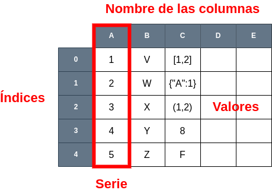

DataFrames#
Un DataFrame de Pandas es una estructura de datos bidimensional altamente flexible y potentec. Esencialmente, un DataFrame es una tabla con filas y columnas, similar a una hoja de cálculo o una tabla en una base de datos relacional. Cada columna en un DataFrame de Pandas puede contener diferentes tipos de datos, como números, cadenas de texto, fechas, etc.
Algunas características clave de un DataFrame de Pandas incluyen:
Organización de datos tabulares: Los datos se organizan en filas y columnas, lo que facilita la representación y manipulación de datos en forma de tabla.
Etiquetas: Tanto las filas como las columnas pueden tener etiquetas, lo que permite un acceso más intuitivo a los datos.
Flexibilidad: Los DataFrames pueden manejar una amplia variedad de tipos de datos en cada columna y ofrecen numerosas operaciones para manipular, filtrar y analizar los datos.
Alto rendimiento: Pandas está diseñado para un rendimiento eficiente en la manipulación de datos, lo que lo hace adecuado para trabajar con conjuntos de datos grandes.
Integración con otras bibliotecas: Los DataFrames de Pandas se utilizan comúnmente junto con bibliotecas como NumPy, Matplotlib y Scikit-Learn para análisis de datos y visualización.
Los DataFrames de Pandas son una herramienta esencial en la ciencia de datos y el análisis de datos en Python, lo que permite a los usuarios cargar, limpiar, transformar y analizar datos de manera efectiva.
import pandas as pd
data = pd.Series([1, 2, 3, 4, 5])
data
0 1
1 2
2 3
3 4
4 5
dtype: int64

Crear un DataFrame#
Para crear un DataFrame en Pandas, primero debes importar la biblioteca Pandas y luego proporcionar los datos que deseas incluir en el DataFrame. A continuación, se muestra cómo crear un DataFrame desde cero utilizando varias formas comunes:
import pandas as pd
data = [
{"Nombre": "Alice", "Edad": 25, "Ciudad": "Nueva York"},
{"Nombre": "Charlie", "Edad": 35, "Ciudad": "Chicago"},
{"Nombre": "Bob", "Edad": 30, "Ciudad": "Los Ángeles"},
]
df = pd.DataFrame(data)
df
| Nombre | Edad | Ciudad | |
|---|---|---|---|
| 0 | Alice | 25 | Nueva York |
| 1 | Charlie | 35 | Chicago |
| 2 | Bob | 30 | Los Ángeles |
En este ejemplo, cada diccionario representa una fila y las claves del diccionario se convierten en nombres de columnas.
import pandas as pd
data = [["Alice", 25, "Nueva York"],
["Bob", 30, "Los Ángeles"],
["Charlie", 35, "Chicago"]]
column_names = ["Nombre", "Edad", "Ciudad"]
df = pd.DataFrame(data, columns=column_names)
df
| Nombre | Edad | Ciudad | |
|---|---|---|---|
| 0 | Alice | 25 | Nueva York |
| 1 | Bob | 30 | Los Ángeles |
| 2 | Charlie | 35 | Chicago |
Aquí, proporcionamos una lista de listas para los datos y una lista separada para los nombres de las columnas.
import pandas as pd
df = pd.read_csv('./csv/countries.csv')
df
| country_id | country_name | region_id | |
|---|---|---|---|
| 0 | AR | Argentina | 2 |
| 1 | AU | Australia | 3 |
| 2 | BE | Belgium | 1 |
| 3 | BR | Brazil | 2 |
| 4 | CA | Canada | 2 |
| 5 | CH | Switzerland | 1 |
Solo asegúrate de que el archivo CSV esté en el mismo directorio o proporciona la ruta correcta al archivo. Podemos abrir otros tipos de archivos, como los parquet, optimizados para guardar la información, o ficheros excel. Mira la documentación de pandas para obtener más información.
import pandas as pd
df = pd.DataFrame()
df['Nombre'] = ["Alice", "Bob", "Charlie"]
df['Edad'] = [25, 30, 35]
df['Ciudad'] = ["Nueva York", "Los Ángeles", "Chicago"]
df
| Nombre | Edad | Ciudad | |
|---|---|---|---|
| 0 | Alice | 25 | Nueva York |
| 1 | Bob | 30 | Los Ángeles |
| 2 | Charlie | 35 | Chicago |
La última manera para crear un DataFrame pasa por crear uno vacío e ir añadiéndole datos.
Exportar DataFrames a ficheros#
Pandas ofrece varias formas de exportar DataFrames a archivos para guardar los datos en diferentes formatos, como CSV, Excel, JSON, SQL, y más. A continuación, se describe cómo exportar un DataFrame a algunos formatos comunes.
Exportar a ficheros CSV#
Para guardar un DataFrame en un archivo CSV, puedes utilizar el método to_csv de Pandas:
df.to_csv('mi_archivo.csv', index=False)
El argumento index=False evita que se guarde el índice del DataFrame como una columna adicional en el archivo CSV.
Exportar a un fichero Excel#
Para exportar un DataFrame a un archivo de Excel, puedes usar el método to_excel:
df.to_excel('mi_archivo.xlsx', index=False)
Este código guardará el DataFrame en un archivo de Excel sin incluir el índice.
Exportar a un fichero JSON#
De igual manera, un DataFrame puede exportar su información a ficheros JSON:
df.to_json('mi_archivo.json', orient='records')
El argumento orient=’records’ especifica cómo se deben organizar los datos en el archivo JSON.
Exportar a base de datos SQL#
Pandas permite exportar un DataFrame directamente a una base de datos SQL utilizando la función to_sql:
from sqlalchemy import create_engine
engine = create_engine('sqlite:///mi_base_de_datos.db')
df.to_sql('mi_tabla', con=engine, if_exists='replace', index=False)
En este ejemplo, create_engine se utiliza para establecer una conexión con una base de datos SQL (en este caso, SQLite). El DataFrame se guarda en la tabla especificada en la base de datos.
Atributos de un DataFrame#
Un DataFrame cuenta con varias propiedades o atributos que permiten manipular u obtener información de sus datos. A continuación, se muestran algunas de estas propiedades:
Here’s a table of the main ways you can create dataframes (see the Pandas documentation for more):
Atributo |
Descripción |
|---|---|
index |
El índice es una etiqueta para las filas del DataFrame. Puede ser un conjunto de etiquetas únicas que identifican cada fila de manera única. El índice facilita el acceso y la manipulación de filas específicas. |
columns |
Las columnas son las etiquetas para las variables o características en el DataFrame. Cada columna representa una variable y tiene un nombre único que la identifica. Pueden contener datos de diferentes tipos. |
shape |
Este atributo muestra las dimensiones del DataFrame en términos de filas y columnas. |
dtypes |
Describe los tipos de datos de cada columna en el DataFrame. |
size |
El número total de elementos en el DataFrame, que es igual al producto del número de filas y columnas. |
T |
El atributo .T te permite transponer el DataFrame, es decir, intercambiar filas y columnas. |
Métodos de un DataFrame#
A su vez, un DataFrame de Pandas cuenta con múltiples métodos que nos permiten realizar operaciones sobre los datos o mostrar información relevante. Vamos a ver algunos de ellos:
Método |
Descripción |
|---|---|
head() y tail() |
Estos métodos te permiten ver las primeras filas (usando head()) y las últimas filas (usando tail()) del DataFrame. Son útiles para obtener una vista previa de los datos. |
info() |
Este método proporciona información sobre el DataFrame, incluyendo la cantidad de valores no nulos en cada columna, el uso de memoria y los tipos de datos de las columnas. |
describe() |
Devuelve estadísticas descriptivas básicas para columnas numéricas, como la media, la desviación estándar, el mínimo, el máximo y los cuartiles. |
iloc y loc |
Estos métodos permiten la selección de datos basada en la posición (iloc) o etiquetas (loc) en el DataFrame. Son fundamentales para acceder a datos específicos. |
select_dtypes(include=None, exclude=None) |
Permite seleccionar las columnas indicando los tipos de las columnas que queremos obtener. |
drop() |
Permite eliminar filas o columnas del DataFrame. Puedes especificar los elementos a eliminar mediante etiquetas y especificar si deseas eliminar filas o columnas. |
sort_values(by=[cols]) |
Ordena el DataFrame en función de los valores en una o más columnas. |
groupby(by=[cols]) |
Se utiliza para agrupar filas basadas en los valores de una o más columnas, lo que permite realizar operaciones de agregación en grupos de datos. |
merge() y join() |
Estos métodos permiten combinar dos DataFrames en función de una o más columnas comunes. |
fillna() |
Rellena valores faltantes (NaN) en el DataFrame con un valor especificado o mediante una estrategia de llenado. |
drop_duplicates() |
Elimina filas duplicadas en el DataFrame. |
apply() y applymap() |
Estos métodos se utilizan para aplicar funciones a filas o columnas, o a cada elemento del DataFrame, respectivamente. |
plot() |
Permite crear gráficos directamente desde un DataFrame para visualizar los datos. |
Acceso a los elementos de un DataFrame#
Existen distintas formas para poder acceder a los datos de un DataFrame. A continuación, vamos a mostrar algunas de ellas partiendo del siguiente DataFrame:
import pandas as pd
df = pd.DataFrame()
df['Nombre'] = ["Alice", "Bob", "Charlie"]
df['Edad'] = [25, 30, 35]
df['Ciudad'] = ["Nueva York", "Los Ángeles", "Chicago"]
df
| Nombre | Edad | Ciudad | |
|---|---|---|---|
| 0 | Alice | 25 | Nueva York |
| 1 | Bob | 30 | Los Ángeles |
| 2 | Charlie | 35 | Chicago |
Lo primero que vamos a seleccionar datos en base a su posición en el DataFrame:
df.iloc[1,2]
'Los Ángeles'
La función iloc nos permite seleccionar elementos en base a su posición. En el ejemplo anterior, estamos seleccionado los elementos de la fila 1 y columna 2, lo cual nos da como resultado “Los ángeles”. Cabe destacar que también podemos indicar un número de filas y columnas mayor a uno, es decir, indicar un rango de filas o columnas:
df.iloc[1,:2]
Nombre Bob
Edad 30
Name: 1, dtype: object
Por último, podemos indicar la fila que queremos obtener y nos devolverá una Serie con los datos de esa fila:
df.iloc[1]
Nombre Bob
Edad 30
Ciudad Los Ángeles
Name: 1, dtype: object
Por otro lado, podemos acceder a los elementos de un DataFrame a través de los nombres de sus elementos:
df["Nombre"]
0 Alice
1 Bob
2 Charlie
Name: Nombre, dtype: object
Esto nos devuelve una serie con los elementos correspondientes a la columna seleccionada. Si el nombre de la columna no tiene espacios, podemos acceder a ella de forma directa tal y como se muestra en el siguiente ejemplo:
df.Nombre
0 Alice
1 Bob
2 Charlie
Name: Nombre, dtype: object
Por último, podemos crear un nuevo sub-DataFrame, indicando el nombre de las columnas que queremos incluir:
df[['Nombre', 'Edad']]
| Nombre | Edad | |
|---|---|---|
| 0 | Alice | 25 |
| 1 | Bob | 30 |
| 2 | Charlie | 35 |
Renombrar elementos de un DataFrame#
Para renombrar elementos en un DataFrame de Pandas, se pueden utilizar varios métodos según las necesidades. Vamos a partir del mismo DataFrame anterior para mostrar el funcionamiento de los métodos:
import pandas as pd
df = pd.DataFrame()
df['Nombre'] = ["Alice", "Bob", "Charlie"]
df['Edad'] = [25, 30, 35]
df['Ciudad'] = ["Nueva York", "Los Ángeles", "Chicago"]
df
| Nombre | Edad | Ciudad | |
|---|---|---|---|
| 0 | Alice | 25 | Nueva York |
| 1 | Bob | 30 | Los Ángeles |
| 2 | Charlie | 35 | Chicago |
Lo primero que podemos hacer es renombrar una o varias columnas utilizando el método rename:
df = df.rename(columns = {"Nombre": "Nombre corto", "Edad": "Age"})
df
| Nombre corto | Age | Ciudad | |
|---|---|---|---|
| 0 | Alice | 25 | Nueva York |
| 1 | Bob | 30 | Los Ángeles |
| 2 | Charlie | 35 | Chicago |
También podemos cambiar el índice de las filas. Para ello, se debe indicar mediante un diccionario los anteriores índices y los nuevos:
df = df.rename(index={1: 1000, 2:2000})
df
| Nombre corto | Age | Ciudad | |
|---|---|---|---|
| 0 | Alice | 25 | Nueva York |
| 1000 | Bob | 30 | Los Ángeles |
| 2000 | Charlie | 35 | Chicago |
Reindexar un DataFrame#
Reindexar un DataFrame en Pandas implica cambiar el índice (etiquetas de filas) y, opcionalmente, reordenar las filas en un nuevo orden. Puedes utilizar el método reindex para llevar a cabo esta operación. Aquí tienes un ejemplo de cómo reindexar un DataFrame:
df = df.reindex(index=[0,1000, 3000, 2000], columns=["Nombre corto", "Age", "Ciudad"], fill_value=0)
df
| Nombre corto | Age | Ciudad | |
|---|---|---|---|
| 0 | Alice | 25 | Nueva York |
| 1000 | Bob | 30 | Los Ángeles |
| 3000 | 0 | 0 | 0 |
| 2000 | Charlie | 35 | Chicago |
Trabajar con columnas de un DataFrame#
Para trabajar con las columnas de un DataFrame en Pandas, puedes realizar diversas operaciones, como acceder a columnas específicas, realizar cálculos, modificar datos o crear nuevas columnas. A continuación, se mostrarán algunas de las operaciones comunes que se pueden realizar:
Añadir columnas#
Puedes agregar una nueva columna al DataFrame simplemente asignándole valores. Por ejemplo, para agregar una columna ‘Sueldo’:
#df["Sueldo"] = [1000, 2000], fallaría, la lista debe tener el mismo número de elementos.
df["Sueldo"] = [1000, 2000, 3000, 4000]
df
| Nombre corto | Age | Ciudad | Sueldo | |
|---|---|---|---|---|
| 0 | Alice | 25 | Nueva York | 1000 |
| 1000 | Bob | 30 | Los Ángeles | 2000 |
| 3000 | 0 | 0 | 0 | 3000 |
| 2000 | Charlie | 35 | Chicago | 4000 |
También podemos crear una nueva columna asignado esta a una serie:
df["Hijos"] = pd.Series([1,0])
df
| Nombre corto | Age | Ciudad | Sueldo | Hijos | |
|---|---|---|---|---|---|
| 0 | Alice | 25 | Nueva York | 1000 | 1.0 |
| 1000 | Bob | 30 | Los Ángeles | 2000 | NaN |
| 3000 | 0 | 0 | 0 | 3000 | NaN |
| 2000 | Charlie | 35 | Chicago | 4000 | NaN |
También podemos crear nuevas columnas en base a valores de otras columnas. Por ejemplo:
df["Tiene hijos"] = df["Hijos"] > 0
df
| Nombre corto | Age | Ciudad | Sueldo | Hijos | Tiene hijos | |
|---|---|---|---|---|---|---|
| 0 | Alice | 25 | Nueva York | 1000 | 1.0 | True |
| 1000 | Bob | 30 | Los Ángeles | 2000 | NaN | False |
| 3000 | 0 | 0 | 0 | 3000 | NaN | False |
| 2000 | Charlie | 35 | Chicago | 4000 | NaN | False |
Operaciones sobre columnas#
Puedes realizar operaciones matemáticas en una columna y asignar el resultado a una nueva columna. Por ejemplo:
df["Age"] = df["Age"] + 1
df
| Nombre corto | Age | Ciudad | Sueldo | Hijos | Tiene hijos | |
|---|---|---|---|---|---|---|
| 0 | Alice | 26 | Nueva York | 1000 | 1.0 | True |
| 1000 | Bob | 31 | Los Ángeles | 2000 | NaN | False |
| 3000 | 0 | 1 | 0 | 3000 | NaN | False |
| 2000 | Charlie | 36 | Chicago | 4000 | NaN | False |
Puedes cambiar los valores de una columna específica utilizando la notación de corchetes. Por ejemplo, para cambiar el valor de la primera fila en la columna ‘Edad’ a 18:
df["Age"][0] = 18
df
/tmp/ipykernel_31116/836562857.py:1: SettingWithCopyWarning:
A value is trying to be set on a copy of a slice from a DataFrame
See the caveats in the documentation: https://pandas.pydata.org/pandas-docs/stable/user_guide/indexing.html#returning-a-view-versus-a-copy
df["Age"][0] = 18
| Nombre corto | Age | Ciudad | Sueldo | Hijos | Tiene hijos | |
|---|---|---|---|---|---|---|
| 0 | Alice | 18 | Nueva York | 1000 | 1.0 | True |
| 1000 | Bob | 31 | Los Ángeles | 2000 | NaN | False |
| 3000 | 0 | 1 | 0 | 3000 | NaN | False |
| 2000 | Charlie | 36 | Chicago | 4000 | NaN | False |
Otra operación bastante interesante es aplicar una función a una columna a través del método apply:
def concatenar_datos(nombre, ciudad):
return "La persona " + str(nombre) + " vive en " + str(ciudad) +"."
df["Concatenacion"] = df.apply(lambda x: concatenar_datos(x['Nombre corto'], x['Ciudad']), axis=1)
df
| Nombre corto | Age | Ciudad | Sueldo | Hijos | Tiene hijos | Concatenacion | |
|---|---|---|---|---|---|---|---|
| 0 | Alice | 18 | Nueva York | 1000 | 1.0 | True | La persona Alice vive en Nueva York. |
| 1000 | Bob | 31 | Los Ángeles | 2000 | NaN | False | La persona Bob vive en Los Ángeles. |
| 3000 | 0 | 1 | 0 | 3000 | NaN | False | La persona 0 vive en 0. |
| 2000 | Charlie | 36 | Chicago | 4000 | NaN | False | La persona Charlie vive en Chicago. |
Finalmente, puedes eliminar una columna utilizando el método drop. Por ejemplo, para eliminar la columna ‘Ciudad’:
df = df.drop('Ciudad', axis=1)
df
| Nombre corto | Age | Sueldo | Hijos | Tiene hijos | Concatenacion | |
|---|---|---|---|---|---|---|
| 0 | Alice | 18 | 1000 | 1.0 | True | La persona Alice vive en Nueva York. |
| 1000 | Bob | 31 | 2000 | NaN | False | La persona Bob vive en Los Ángeles. |
| 3000 | 0 | 1 | 3000 | NaN | False | La persona 0 vive en 0. |
| 2000 | Charlie | 36 | 4000 | NaN | False | La persona Charlie vive en Chicago. |
Indexar y particionar un DataFrame#
Aunque algunas de estas operaciones ya las hemos visto, resultra interesante volver a verlas y entender como podemos indexar y redimensionar DataFrames.
Para ello, vamos a utilizar los siguientes elementos:
[].loc.ilocIndexado booleano
query()
Vamos a volver a generar el DataFrame anterior y mostrar las opciones que nos ofrece pandas.
import pandas as pd
df = pd.DataFrame()
df['Nombre'] = ["Alice", "Bob", "Charlie"]
df['Edad'] = [25, 30, 35]
df['Ciudad'] = ["Nueva York", "Los Ángeles", "Chicago"]
df
| Nombre | Edad | Ciudad | |
|---|---|---|---|
| 0 | Alice | 25 | Nueva York |
| 1 | Bob | 30 | Los Ángeles |
| 2 | Charlie | 35 | Chicago |
Indexar con [ ]#
Como ya hemos visto, podemos obtener una columna de un DataFrame indicando su nombre:
df["Nombre"]
0 Alice
1 Bob
2 Charlie
Name: Nombre, dtype: object
Esto nos devuelve una serie con el contenido de la columna. Pero si queremos que se devuelva un DataFrame con el contenido de la columna, debemos usar doble [ ]:
df[["Nombre"]]
| Nombre | |
|---|---|
| 0 | Alice |
| 1 | Bob |
| 2 | Charlie |
A su vez, podemos indicar varias columnas para obtener un subconjunto de un DataFrame:
df[["Nombre", "Ciudad"]]
| Nombre | Ciudad | |
|---|---|---|
| 0 | Alice | Nueva York |
| 1 | Bob | Los Ángeles |
| 2 | Charlie | Chicago |
Por otro lado, podemos indicar un rango de filas para seleccionar un grupo de estas en un DataFrame:
df[0:1]
| Nombre | Edad | Ciudad | |
|---|---|---|---|
| 0 | Alice | 25 | Nueva York |
Cabe destacar que no podemos indicar solo el índice de una fila, ya que esto fallaría.
Otro ejemplo de selección de filas sería el siguiente, donde hemos indicado donde empezamos pero no donde terminamos:
df[1:]
| Nombre | Edad | Ciudad | |
|---|---|---|---|
| 1 | Bob | 30 | Los Ángeles |
| 2 | Charlie | 35 | Chicago |
Indexar con loc e iloc#
Como ya hemos mencionado anteriormente, estos métodos permiten la selección de datos basada en la posición (iloc) o etiquetas (loc) en el DataFrame:
df.iloc[0]
Nombre Alice
Edad 25
Ciudad Nueva York
Name: 0, dtype: object
Como se puede observar, esta instrucción devuelve una serie con el contenido de la primera columna. Pero si indicamos un rango de columnas, en vez de eso, nos va a devolver un DataFrame con el valor de las columnas seleccionadas:
df.iloc[0:2]
| Nombre | Edad | Ciudad | |
|---|---|---|---|
| 0 | Alice | 25 | Nueva York |
| 1 | Bob | 30 | Los Ángeles |
Por otro lado, podemos acceder al valor de una celda indicando la fila y la columna:
df.iloc[2,1]
35
O crear un nuevo DataFrame donde indiquemos las celdas que queremos seleccionar:
df.iloc[[0, 1], [1, 2]]
| Edad | Ciudad | |
|---|---|---|
| 0 | 25 | Nueva York |
| 1 | 30 | Los Ángeles |
Con la función loc podemos seleccionar una columna indicando su nombre:
df.loc[:, 'Nombre']
0 Alice
1 Bob
2 Charlie
Name: Nombre, dtype: object
O un conjunto de columnas:
df.loc[:, 'Nombre':'Edad']
| Nombre | Edad | |
|---|---|---|
| 0 | Alice | 25 |
| 1 | Bob | 30 |
| 2 | Charlie | 35 |
A su vez, podemos indicar las filas que queremos seleccionar de una columna o columnas:
df.loc[[0, 2], ['Ciudad']]
| Ciudad | |
|---|---|
| 0 | Nueva York |
| 2 | Chicago |
Finalmente, podemos jugar con el atributo índex y columns para acceder a los valores de las filas y las columnas:
df.index
RangeIndex(start=0, stop=3, step=1)
df.columns
Index(['Nombre', 'Edad', 'Ciudad'], dtype='object')
df.loc[df.index[0], 'Ciudad']
'Nueva York'
df.loc[2, df.columns[1]]
35
Indexado booleano#
Otra opción que tenemos es indexar el contenido a través de fórmulas booleanas.
df
| Nombre | Edad | Ciudad | |
|---|---|---|---|
| 0 | Alice | 25 | Nueva York |
| 1 | Bob | 30 | Los Ángeles |
| 2 | Charlie | 35 | Chicago |
Por ejemplo, vamos a filtrar las filas de aquellas personas que tengan una edad mayor o igual a 30:
df[df['Edad'] >= 30]
| Nombre | Edad | Ciudad | |
|---|---|---|---|
| 1 | Bob | 30 | Los Ángeles |
| 2 | Charlie | 35 | Chicago |
O por otro lado, aquellas que se llamen Alice:
df[df['Nombre'] == "Alice"]
| Nombre | Edad | Ciudad | |
|---|---|---|---|
| 0 | Alice | 25 | Nueva York |
Indexar con query()#
Finalmente, podemos utilizar el método query para realizar consultas a nuestro DataFrame:
df.query("Edad > 25 & Nombre == 'Bob'")
| Nombre | Edad | Ciudad | |
|---|---|---|---|
| 1 | Bob | 30 | Los Ángeles |
La anterior consulta nos filtra las personas que se llamen Bob y tengan una edad mayor a 25. Cabe destacar que toda query puede representarse mediante consultas booleanas o viceversa:
df[(df['Edad'] > 25) & (df['Nombre'] == 'Bob')]
| Nombre | Edad | Ciudad | |
|---|---|---|---|
| 1 | Bob | 30 | Los Ángeles |
Adicionalmente a esto, el método query permite utilizar variables ya definidad:
edad_minima = 25
df.query("Edad > @edad_minima")
| Nombre | Edad | Ciudad | |
|---|---|---|---|
| 1 | Bob | 30 | Los Ángeles |
| 2 | Charlie | 35 | Chicago |